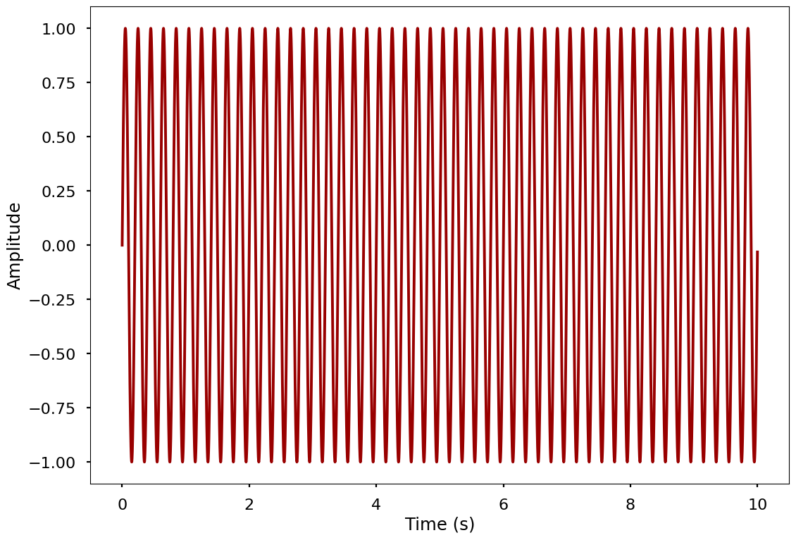
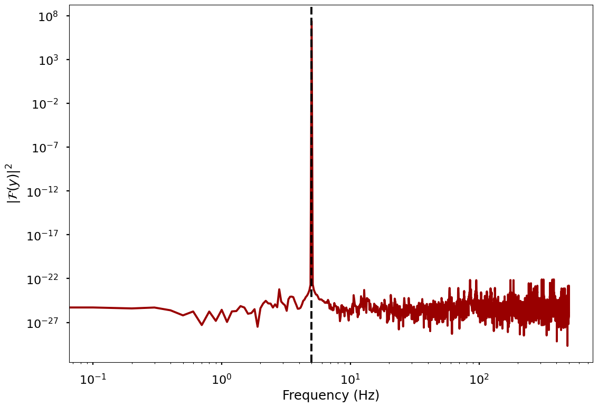
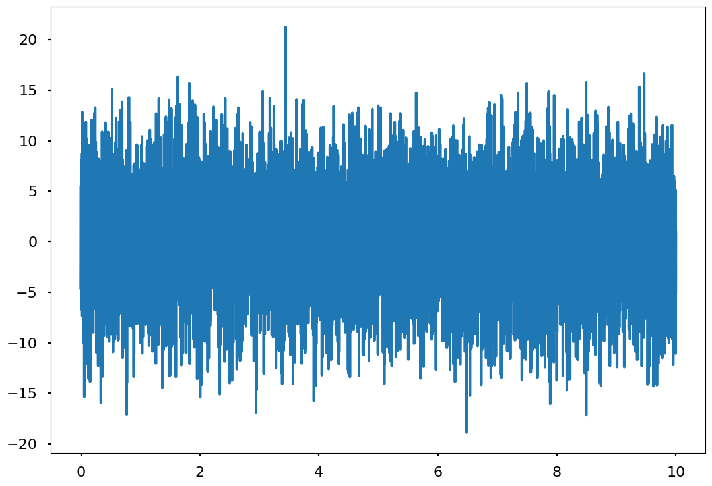
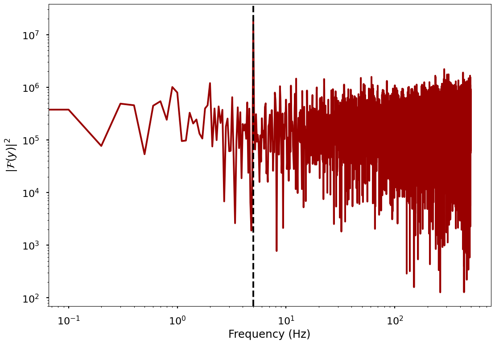
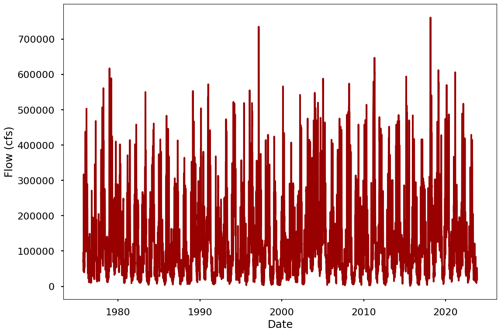
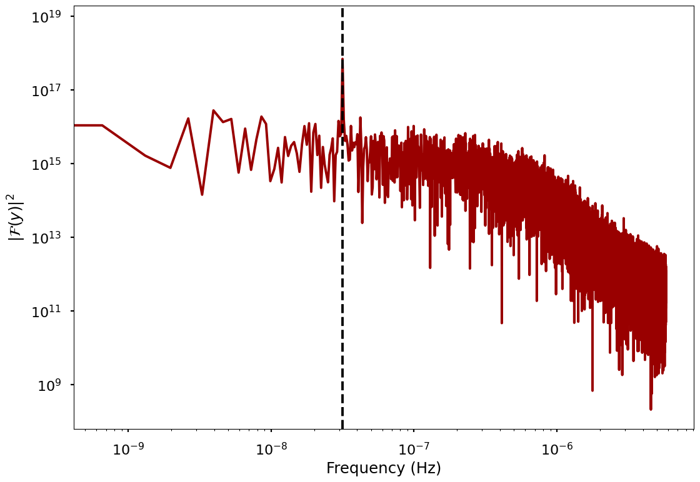
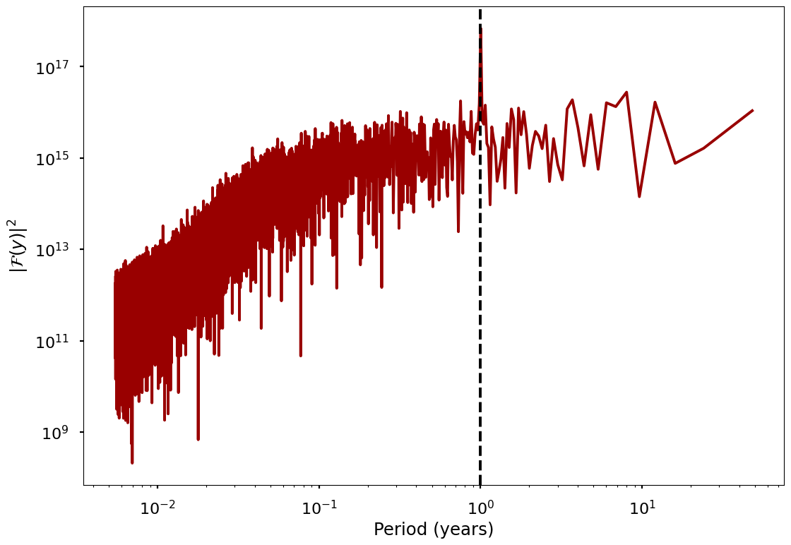

Work-along: Working with the FFT#
This notebook explores Fourier transforms and the numpy.fft package on some simple examples and realistic problems.
""" Import libraries. """
import numpy as np
import numpy.fft as fft
import matplotlib.pyplot as plt
import pandas as pd
# use seaborn poster v8
plt.style.use('seaborn-v0_8-poster')
""" Create and plot a test signal. """
frequency = 5 # Hz
# Convert to radians per second
freq_rad = 2*np.pi*frequency # rad/s
# Create a time axis
dt = 0.001 # seconds
t = np.arange(0, 10, dt)
# Create a test signal
y = np.sin(freq_rad*t)
# plot the test signal in the time domain
fig, ax = plt.subplots()
ax.plot(t, y, color = '#990000')
ax.set_xlabel('Time (s)')
ax.set_ylabel('Amplitude')
plt.show()

""" Compute the FFT of the test signal. """
# do the FFT
y_fft = fft.rfft(y)
# get the power spectrum from the FFT
y_power = np.abs(y_fft*np.conj(y_fft))
# get the frequencies for the FFT
freqs = fft.rfftfreq(len(y), dt)
# plot the FFT
fig, ax = plt.subplots()
ax.plot(freqs, y_power, color = '#990000')
# make the x-axis logarithmic
ax.set_xscale('log')
ax.set_yscale('log')
# add axis labels
ax.set_xlabel('Frequency (Hz)')
ax.set_ylabel('$|\mathcal{F}(y)|^2$')
# plot a line at the frequency of the test signal
ax.axvline(frequency, color = '#000000', linestyle = '--')
plt.show()
<>:20: SyntaxWarning: invalid escape sequence '\m'
<>:20: SyntaxWarning: invalid escape sequence '\m'
/tmp/ipykernel_1904598/1815837586.py:20: SyntaxWarning: invalid escape sequence '\m'
ax.set_ylabel('$|\mathcal{F}(y)|^2$')

""" Make a function to compute the power spectrum of a signal. """
def power_spectrum(y, t):
""" Compute the power spectrum of a signal. Returns frequencies and the power spectrum: freqs, y_power """
# do the FFT
y_fft = fft.rfft(y)
# get the power spectrum from the FFT
y_power = np.abs(y_fft*np.conj(y_fft))
# get the frequencies for the FFT
freqs = fft.rfftfreq(len(y), t[1] - t[0])
return freqs, y_power
# also make a function for plotting
def plot_power_spectrum(freqs, y_power):
""" Plots the power spectrum of a signal. Returns the figure and axes: fig, ax """
# plot the FFT
fig, ax = plt.subplots()
ax.plot(freqs, y_power, color = '#990000')
# make the x-axis logarithmic
ax.set_xscale('log')
ax.set_yscale('log')
# add axis labels
ax.set_xlabel('Frequency (Hz)')
ax.set_ylabel('$|\mathcal{F}(y)|^2$')
return fig, ax
<>:27: SyntaxWarning: invalid escape sequence '\m'
<>:27: SyntaxWarning: invalid escape sequence '\m'
/tmp/ipykernel_1904598/2722633305.py:27: SyntaxWarning: invalid escape sequence '\m'
ax.set_ylabel('$|\mathcal{F}(y)|^2$')
""" Get the power spectrum with noise added. """
# add noise to y
y_noisy = y + np.random.normal(0, 5, len(y))
plt.plot(t, y_noisy)
plt.show()
# get the power spectrum
freqs, y_power = power_spectrum(y_noisy, t)
# plot the power spectrum
fig, ax = plot_power_spectrum(freqs, y_power)
# plot a line at the frequency of the test signal
ax.axvline(frequency, color = '#000000', linestyle = '--')
plt.show()


Real data#
Download this data file: taobrienlbl/advanced_earth_science_data_analysis
The data file was obtained from https://waterdata.usgs.gov/nwis/dv/?site_no=03303280&PARAmeter_cd=00060 on 11/10/23 at about 11:16 AM Eastern. It represents daily stream flow from 1975-present at a gauge on the Ohio River in Cannelton, IN
""" Load the data file. """
skiprows = 30
# load the data
data = pd.read_csv(
"cannelton_flow.dat",
skiprows = skiprows,
delim_whitespace = True,
names = ['org', 'id', 'date', 'flow', 'flag'],
parse_dates=['date'],
)
data.head()
/tmp/ipykernel_1904598/1589004048.py:5: FutureWarning: The 'delim_whitespace' keyword in pd.read_csv is deprecated and will be removed in a future version. Use ``sep='\s+'`` instead
data = pd.read_csv(
| org | id | date | flow | flag | |
|---|---|---|---|---|---|
| 0 | USGS | 3303280 | 1975-10-01 | 94800 | A |
| 1 | USGS | 3303280 | 1975-10-02 | 79900 | A |
| 2 | USGS | 3303280 | 1975-10-03 | 69000 | A |
| 3 | USGS | 3303280 | 1975-10-04 | 74700 | A |
| 4 | USGS | 3303280 | 1975-10-05 | 71700 | A |
""" Plot a time series of the data. """
fig, ax = plt.subplots()
ax.plot(data['date'], data['flow'], color = '#990000')
ax.set_xlabel('Date')
ax.set_ylabel('Flow (cfs)')
plt.show()

""" Plot the power spectrum of the data. """
# convert the times to seconds
time_seconds = (data['date'] - data['date'][0]).dt.total_seconds()
# get the power spectrum
freqs, cfm_power = power_spectrum(data['flow'], time_seconds)
# plot the power spectrum
fig, ax = plot_power_spectrum(freqs, cfm_power)
# plot a line at the annual frequency
year_seconds = 365.25*24*60*60
ax.axvline(1/year_seconds, color = '#000000', linestyle = '--')
plt.show()

""" Plot the power spectrum of the data with the x-axis as period instead. """
# convert the times to seconds
time_seconds = (data['date'] - data['date'][0]).dt.total_seconds()
# get the power spectrum
freqs, cfm_power = power_spectrum(data['flow'], time_seconds)
# convert the frequencies to period (years)
periods = 1/freqs * 1/(60*60*24*365.25)
fig, ax = plt.subplots()
ax.plot(periods, cfm_power, color = '#990000')
# make the x-axis logarithmic
ax.set_xscale('log')
ax.set_yscale('log')
# add axis labels
ax.set_xlabel('Period (years)')
ax.set_ylabel('$|\mathcal{F}(y)|^2$')
# plot a line at the annual frequency
ax.axvline(1, color = '#000000', linestyle = '--')
plt.show()
<>:21: SyntaxWarning: invalid escape sequence '\m'
<>:21: SyntaxWarning: invalid escape sequence '\m'
/tmp/ipykernel_1904598/3842981671.py:21: SyntaxWarning: invalid escape sequence '\m'
ax.set_ylabel('$|\mathcal{F}(y)|^2$')
/tmp/ipykernel_1904598/3842981671.py:9: RuntimeWarning: divide by zero encountered in divide
periods = 1/freqs * 1/(60*60*24*365.25)
